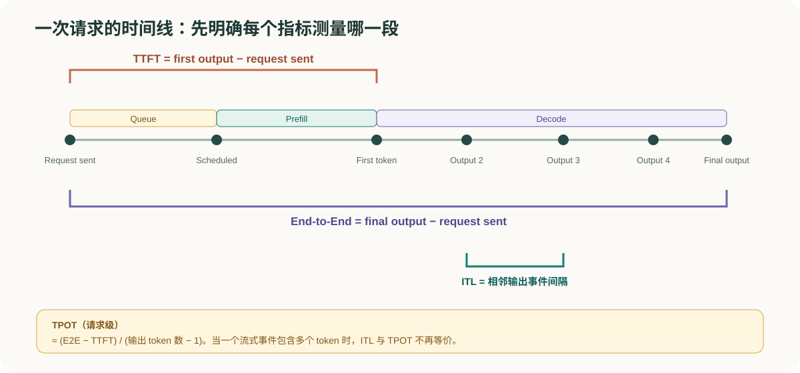

第 17 章 · 生产部署、观测与可靠性
Observability：让推理服务的瓶颈可见
用户说“模型很慢”，这不是一个可操作的诊断结论。你需要判断慢在请求排队、Prefill、Decode、网络、GPU、KV Cache，还是上游 Gateway。指标给出整体分布，日志提供事件上下文，Trace 把跨组件时间线连起来。
推理系统的平均延迟很容易掩盖问题：少数长上下文请求可能让 P99 TTFT 恶化；Decode 速度可能正常，但请求在 Scheduler 队列里等待很久；GPU 利用率可能很高，却仍然有大量请求排队。观测系统的任务不是堆满 Dashboard，而是让每个症状都能映射到可验证的假设。
读完这一章，你应该能够
- 区分请求延迟、Token 速度、队列、KV Cache 和硬件指标。
- 正确解释 TTFT、ITL、TPOT 与端到端延迟之间的关系。
- 选择 vLLM 当前 V1 暴露的 Prometheus 指标进行监控。
- 编写基础 PromQL 查询，并理解 Histogram 的 bucket 计算方式。
- 用 Trace 与日志关联 Gateway、Router、Engine Core 和 GPU 执行事件。

17.1 三个观测层次
| 层次 | 观察什么 | 回答的问题 |
|---|---|---|
| 业务 / 客户端 | 成功率、请求量、用户感知延迟、输出长度、取消率 | 用户体验是否满足 SLO？ |
| 推理引擎 | TTFT、ITL、TPOT、队列、Prefill / Decode、KV Cache、抢占 | 请求在 vLLM 内部卡在哪里？ |
| 基础设施 | GPU SM / 显存、CPU、主机内存、PCIe / NVLink、网络和磁盘 | 引擎是否被硬件或基础设施约束？ |
vLLM 的 /metrics 暴露 Prometheus 格式的引擎指标。GPU 利用率、功耗和显存等硬件信号通常还需要 NVIDIA DCGM Exporter 或平台对应的设备监控组件；不能期待 vLLM 自己覆盖整个节点。
17.2 TTFT、ITL、TPOT 与 E2E
假设客户端在时间 t₀ 发送请求，收到第一个输出 token 的时间为 t₁，随后每次收到输出的时间为 t₂ … tₙ，最后一个输出在 tₙ 到达：
- TTFT：Time To First Token。客户端视角下，从发送请求到收到首个流式输出的时间。
- ITL：Inter-Token Latency。相邻两次流式输出事件之间的时间间隔。
- TPOT：Time Per Output Token。按单请求计算，通常为
(E2E − TTFT) / (输出 token 数 − 1)。 - E2E：End-to-End Latency。从客户端发起请求到最后一个输出到达的总时间。
- Queue Time：请求在进入运行阶段之前等待调度的时间。
标准逐 token streaming 时，ITL 与 TPOT 往往接近；但如果一次输出事件包含多个 token（例如某些 speculative decoding / streaming 设置），两者就不再是同一个统计量。vLLM 的 request_time_per_output_token_seconds 是请求级 TPOT Histogram；inter_token_latency_seconds 记录相邻输出事件之间的间隔。当前实现对输出不超过一个 token 的请求记录 TPOT 为 0，因此 Prometheus Histogram 与 benchmark 工具排除这类请求后的 TPOT 统计也可能不同。
不要把客户端 TTFT 与服务端某个内部阶段耗时混用。客户端基准包含网络与 API 入口时间；服务端指标可能从调度或推理阶段开始计时。比较数字时必须先核对测量点。
17.3 vLLM 关键 Prometheus 指标
当前 V1 指标使用 vllm: 前缀。下面列出适合建立第一版 Dashboard 的指标族：
| 指标 | 类型 / 含义 | 排障用途 |
|---|---|---|
vllm:time_to_first_token_seconds | Histogram · 首 token 延迟 | 识别首 token 慢与长尾 |
vllm:inter_token_latency_seconds | Histogram · 相邻输出事件间隔 | 观察生成过程中的停顿 |
vllm:request_time_per_output_token_seconds | Histogram · 请求级 TPOT | 比较请求级生成速度 |
vllm:e2e_request_latency_seconds | Histogram · 端到端请求延迟 | 衡量完整请求耗时 |
vllm:request_queue_time_seconds | Histogram · WAITING 阶段耗时 | 判断排队是否主导延迟 |
vllm:num_requests_waiting / vllm:num_requests_waiting_by_reason | Gauge · 等待请求数及等待原因 | 区分容量不足与暂时性延迟约束 |
vllm:num_requests_running | Gauge · 正在运行的请求数 | 观察并发状态 |
vllm:kv_cache_usage_perc | Gauge · KV Cache blocks 使用比例 | 判断缓存压力 |
vllm:request_num_preemptions | Histogram · 请求抢占次数 | 定位资源压力导致的重算 |
vllm:request_prefill_time_seconds | Histogram · Prefill 时间 | 定位长 Prompt 与预填充成本 |
vllm:request_decode_time_seconds | Histogram · Decode 时间 | 定位生成阶段成本 |
指标名称和 Histogram bucket 会随版本演进。抓取前应在目标实例访问 /metrics 检查实际暴露的指标，而不是把旧教程中的名称原样复制。当前官方文档也支持按指标族配置自定义 Histogram bucket；bucket 越多、label 组合越复杂，Prometheus 时间序列数量越大。
17.4 PromQL：从指标到问题
Histogram 的 P99 不能直接对一个 _sum 做百分位计算；需要对 bucket counter 使用 rate()，再按 le 聚合：
# 最近 5 分钟的 P99 TTFT
histogram_quantile(
0.99,
sum by (le) (
rate(vllm:time_to_first_token_seconds_bucket[5m])
)
)
# 等待队列当前值
vllm:num_requests_waiting
# KV Cache 使用率
vllm:kv_cache_usage_perc
# 最近 5 分钟的请求级 TPOT P95
histogram_quantile(
0.95,
sum by (le) (
rate(vllm:request_time_per_output_token_seconds_bucket[5m])
)
)如果同一个 Prometheus 中采集多个模型或多个 Engine，可根据实际暴露的 labels（例如 model_name、engine）加入聚合维度。不要凭空假设 label 名称；先看实际 time series。
建议 Dashboard 至少分为四行：用户 SLO（成功率、P50 / P95 / P99 E2E）、生成体验（TTFT / ITL / TPOT）、引擎压力（Waiting / Running / KV Cache / Preemptions）和硬件状态（GPU / CPU / 内存 / 网络）。
17.5 Tracing 与高基数边界
Metrics 擅长回答“整体趋势如何”，但很难解释“这一个请求为什么慢”。分布式 Trace 可以把 API Gateway、Router、请求预处理、Engine Core 与模型执行等阶段连接成一条时间线。vLLM 支持 OpenTelemetry tracing，可通过 --otlp-traces-endpoint 配置接收端，并按需要启用更细粒度的 trace collection。
日志适合记录错误、重试、模型版本、请求 ID 和关键状态变化。Trace 适合分析跨服务的时间消耗。Metrics 则负责稳定的聚合趋势。三者互补，不应让 Prometheus label 承担请求级事件存储的工作。
避免高基数标签。不要把 prompt、用户 ID、request ID、完整 URL 或任意租户字符串直接作为 Prometheus label。它们会使时间序列数量快速膨胀，并带来存储、查询和隐私成本。请求级标识应放在受控日志或 Trace 中，并执行采样、脱敏和访问控制。
17.6 交互排障：从症状定位瓶颈
选择你看到的症状
优先检查：Queue Time、Prompt tokens、Prefill time、Prefix Cache 命中和上游网络。若 Queue Time 高，先查容量与路由；若队列低但 Prefill 高，再看长 Prompt、模型计算与缓存命中。
优先检查：Decode time、Running requests、GPU SM / memory bandwidth、KV Cache 压力和抢占。若 ITL 上升但 TTFT 正常，瓶颈更可能发生在逐步生成阶段，而不是请求初始排队。
优先检查：num_requests_waiting、request_queue_time、请求到达速率、输出长度、max_num_seqs、token budget 与副本负载。先判断是持续过载还是某个路由热点造成的局部积压。
优先检查：kv_cache_usage_perc、request_num_preemptions、上下文长度分布和并发。不要只看 KV 使用比例；还要看是否出现抢占、等待增加或 Prefix Cache 驻留变化。
排障时先形成一个可以被指标证伪的假设，再做单变量实验。不要一看到 GPU utilization 低就加并发，也不要一看到 KV Cache 高就立即缩短所有请求上下文；不同瓶颈需要不同干预。
本章自检
- 为什么客户端 TTFT 与服务端 Prefill 时间不是同一个指标？
- 标准逐 token streaming 下 ITL 与 TPOT 为什么相近？何时会不同？
- 为什么计算 Histogram P99 要使用 bucket，而不是直接看 sum / count？
- TTFT 高但 Queue Time 低时，下一步应检查哪些指标？
- 为什么不应把 request_id 或用户 ID 作为 Prometheus label？
下一章讨论安全边界：谁可以访问推理 API、哪些运维端点必须隐藏，以及共享缓存会带来哪些多租户风险。
参考资料与源码入口
- vLLM：Production Metrics，V1 指标名、类型、Histogram bucket 与 cardinality。
- vLLM：Benchmark CLI — Understanding Latency Metrics，客户端 TTFT、ITL、TPOT 的测量口径。
- vLLM：Metrics Design，OpenTelemetry tracing 与执行阶段指标。
- Prometheus：Histograms and summaries，Histogram bucket 与 quantile 计算。
- vLLM Production Stack：Distributed Tracing。
指标名按 vLLM 当前 V1 官方文档与源码审校。不同版本、模型任务、可选组件和部署模式可能暴露不同指标；请以目标服务的 /metrics 实际结果为准。